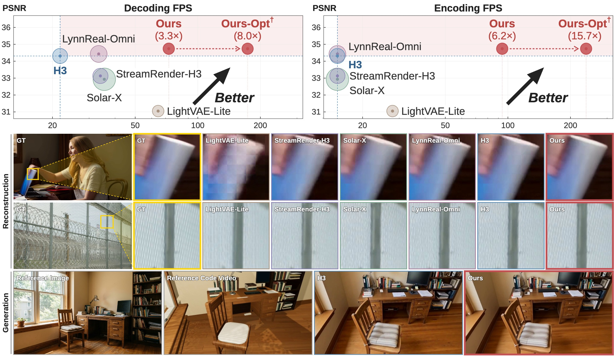
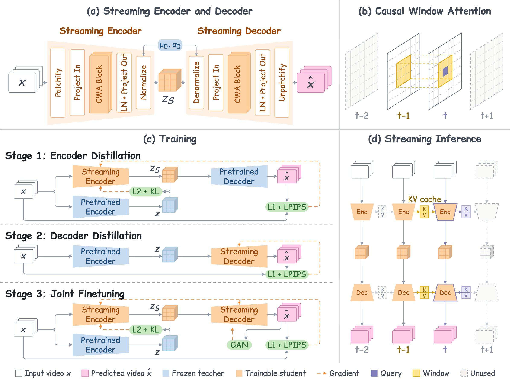
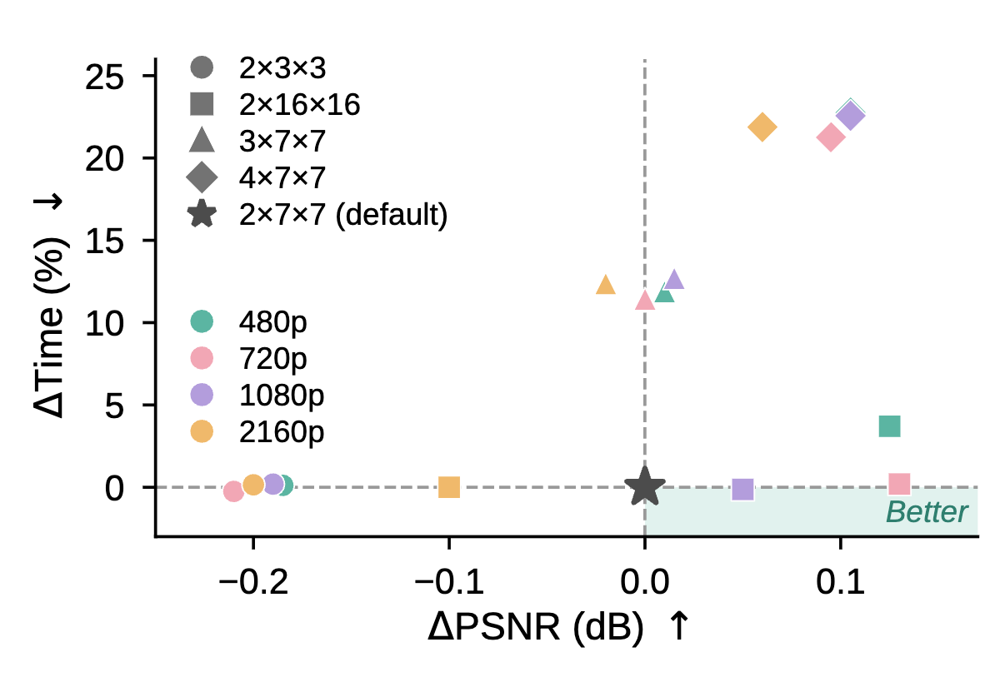

- 5.2–6.2×faster encoding than the official MiniMax-H3 VAE
- 3.0–3.3×faster decoding, with higher PSNR
- 13.4×speedup with our inference infrastructure, with almost no quality loss
Abstract
While video diffusion models have grown faster and increasingly streamable, the video VAE remains a primary latency bottleneck across interactive generation and editing pipelines. Existing VAEs and their acceleration methods rely mainly on heavy convolutions or full frame attention, and most focus only on decoding, leaving encoding costly for streaming conditional generation and editing. This raises a natural question: Do video VAE encoding and decoding actually require such global spatiotemporal modeling? By analyzing the effective receptive fields of pretrained video VAEs, we find that both encoding and decoding a patch rely almost entirely on its spatial and temporal neighbors. To exploit this strong locality, we introduce LiveVAE, a streaming encoder and decoder built on causal window attention, which cuts per frame compute while keeping the temporal KV cache bounded for streaming. Decoupled encoder/decoder distillation followed by joint finetuning preserves the pretrained latent space, making LiveVAE a drop-in replacement for the original VAE. On MiniMax-H3, LiveVAE achieves 5.2–6.2× faster encoding and 3.0–3.3× faster decoding than the official VAE with higher PSNR. Paired with our dedicated inference infrastructure, LiveVAE pushes the speedup to 13.4× with almost no quality loss. Code and models will be released.
Locality in Pretrained Video VAEs
We measure the effective receptive field of the encoders and decoders of MiniMax-H3 and Wan2.2. For both, the output at a patch depends almost entirely on its spatial and temporal neighbors: a 7×7 spatial window already covers 95–100% of the influence, and two frames cover 71–99%. Global attention over the whole frame is therefore not needed for encoding or decoding.

Method
LiveVAE replaces the convolutional encoder and decoder with stacks of causal window attention blocks. Each token attends only to a small spatial window in the current frame and the previous frame, so the cost per frame stays fixed and the KV cache stays bounded during streaming. Training is a three stage progressive distillation from the pretrained VAE: the streaming encoder is distilled to match the pretrained latents, the streaming decoder is distilled on those latents, and both are then finetuned jointly. Because the latent space is preserved, LiveVAE works with existing diffusion models without retraining them.

Reference to Video Generation
The same generated latents are decoded by the official MiniMax-H3 VAE and by LiveVAE. Each example shows the code rendered condition video, the H3 decoding and the LiveVAE decoding side by side.
Efficiency


BibTeX
@article{an2026livevae,
title = {LiveVAE: Causal Window Attention Makes Efficient Streaming Video VAE},
author = {An, Jiachen and Zhao, Sijie and Li, Le and Liu, Hongyu and Li, Zhiyuan and
Yang, Tianyu and Kong, Xiaoyu and Cai, Xunliang and Zhang, Yong and
Pun, Chi-Man and Wei, Xiaoming and Cun, Xiaodong},
journal = {arXiv preprint},
year = {2026}
}